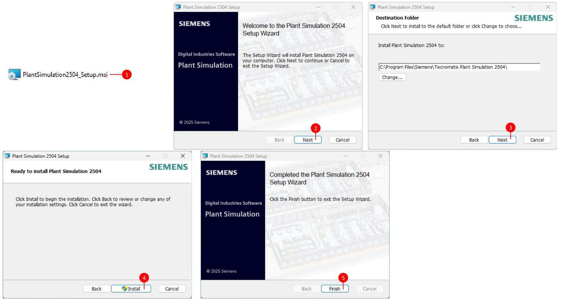
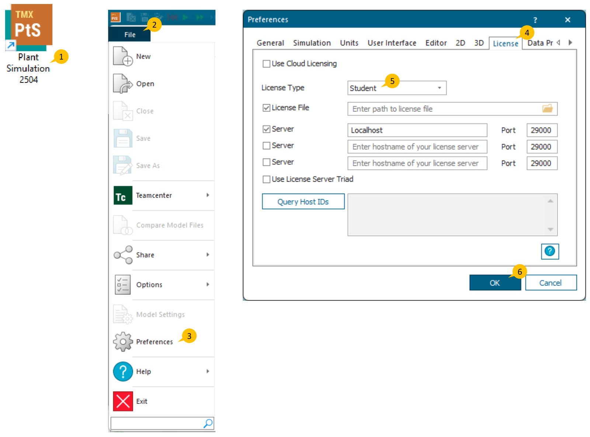

0.1 ติดตั้ง Plant Simulation 2504
เริ่มต้น: ติดตั้งโปรแกรม · ภาคปฏิบัติ
วัตถุประสงค์การเรียนรู้
- ตรวจได้ว่าเครื่องของตัวเองพร้อมสำหรับ Plant Simulation 2504
- ติดตั้งโปรแกรมได้เองจากไฟล์
PlantSimulation2504_Setup.msi - ตั้งค่า Student License ได้ทั้งตอนเปิดโปรแกรมครั้งแรก และเปลี่ยนภายหลัง
ทำก่อนวันอบรม: ติดตั้งโปรแกรมและตั้ง License ให้เสร็จก่อนมาเรียน
ใช้เวลาประมาณ 15–20 นาที — ดาวน์โหลดไฟล์ติดตั้งเก็บลงไดรฟ์ในเครื่องก่อน แล้วค่อยเปิดติดตั้ง
⬇ ดาวน์โหลดไฟล์ติดตั้ง (Google Drive)
PlantSimulation2504_Setup.msi ประมาณ 300 MB — Google Drive จะเตือนว่าสแกนไวรัสไฟล์ใหญ่ไม่ได้ ให้คลิก Download anyway
ติดตั้งบนเครื่องไหน: คอมพิวเตอร์ส่วนตัวติดตั้งได้เลย ·
ถ้าเป็นคอมพิวเตอร์ของบริษัท ต้องแจ้งฝ่าย IT ก่อนติดตั้ง
1. ความต้องการของเครื่อง
| รายการ | ที่แนะนำ |
|---|---|
| ระบบปฏิบัติการ | Windows 10 หรือ Windows 11 แบบ 64-bit (ไม่รองรับ Windows 7 และ macOS) |
| CPU | Intel Core i5, i7, i9 หรือเทียบเท่า |
| หน่วยความจำ (RAM) | 16 GB |
| พื้นที่ดิสก์ | ว่างอย่างน้อย 2 GB บน SSD |
| หน้าจอ | 1920 × 1080 หรือละเอียดกว่า |
ถ้าจะใช้ 3D (ใช้ในบท 2.8 Advanced 3D Animation)
- การ์ดจอต้องรองรับ OpenGL (1.1, 1.5, 3.3 หรือ 4.5) — ใช้ได้ทั้ง NVIDIA, AMD และ Intel
- การ์ดจอ Intel ต้องเป็นรุ่น HD 4600 ขึ้นไป
- ใช้ 3D ได้ครบทุกอย่างเมื่อการ์ดจอรองรับ OpenGL 4.5 ขึ้นไป
ระวัง: 3D ใช้ไม่ได้บนเครื่องเสมือน (Virtual Machine) หรือ VDI —
ถ้าจะเรียนบท 3D ให้ติดตั้งบนเครื่องจริง
2. ติดตั้ง Plant Simulation 2504

- 1ดับเบิลคลิกไฟล์
PlantSimulation2504_Setup.msi - 2หน้า Welcome คลิก Next
- 3หน้า Destination Folder ใช้โฟลเดอร์ที่ตั้งไว้
C:\Program Files\Siemens\Tecnomatix Plant Simulation 2504\แล้วคลิก Next - 4หน้า Ready to install คลิก Install — ถ้า Windows ถามสิทธิ์ผู้ดูแลเครื่อง (รูปโล่บนปุ่ม) ให้คลิก Yes
- 5รอจนขึ้นหน้า Completed แล้วคลิก Finish — บนหน้าจอ Desktop จะมีไอคอน Plant Simulation 2504
ติดตั้งไม่ผ่าน: การติดตั้งต้องใช้สิทธิ์ผู้ดูแลเครื่อง (Administrator)
— ถ้าเป็นเครื่องของบริษัทแล้วคลิก Install ไม่ได้ ให้ฝ่าย IT ติดตั้งให้
3. ตั้งค่า Student License
Student License ใช้ได้ฟรีสำหรับการเรียนรู้ส่วนตัว ตั้งได้ 2 ทาง: ตอนเปิดโปรแกรมครั้งแรก (3.1) หรือเปลี่ยนภายหลังจากเมนู (3.2)
ข้อจำกัดของ Student License:
แบบจำลองหนึ่งตัวมี Object ได้ ไม่เกิน 80 ตัว ·
ใช้เพื่อการเรียนเท่านั้น ห้ามใช้กับงานโครงการของบริษัท งานรับจ้าง หรืองานเชิงพาณิชย์ และโอนสิทธิ์ให้ผู้อื่นไม่ได้
ใช้กับหลักสูตรนี้ได้ครบ: แบบจำลองทุกไฟล์ของหลักสูตรมี Object ไม่เกิน 80 ตัว
จึงเปิดและรันด้วย Student License ได้ทุกบท
3.1 เปิดโปรแกรมครั้งแรก
- 1ดับเบิลคลิกไอคอน Plant Simulation 2504 บน Desktop
- 2หน้าต่าง License Setup ขึ้นมา เพราะยังไม่มี License — คลิกปุ่มล่างสุด I am a student and want to use a free student license where I can use the software with some limitations.
3.2 เปลี่ยน License ภายหลัง
ใช้เมื่อปิดหน้าต่าง License Setup ไปแล้ว หรือเคยเลือก License แบบอื่นไว้

- 1เปิด Plant Simulation 2504
- 2คลิกเมนู File
- 3คลิก Preferences
- 4คลิกแท็บ License
- 5ช่อง License Type เลือก Student
- 6คลิก OK
ตรวจว่าพร้อมเรียน
- เปิด Plant Simulation 2504 ได้ และไม่มีหน้าต่าง License Setup ขึ้นมาอีก
- ไปต่อที่ 0.2 โหลดไฟล์ตัวอย่างของหลักสูตร แล้วเปิดโมเดลแรกทดสอบ